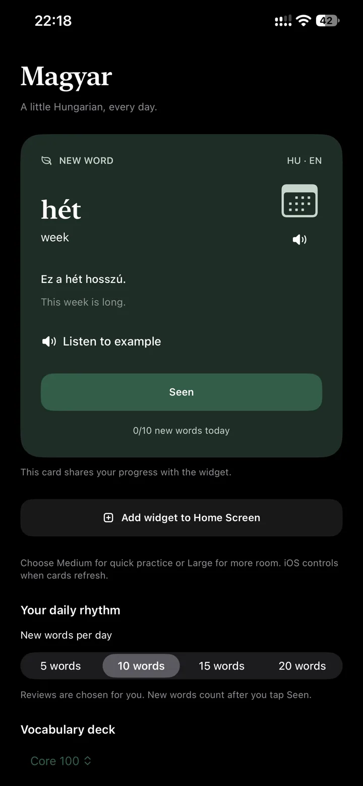
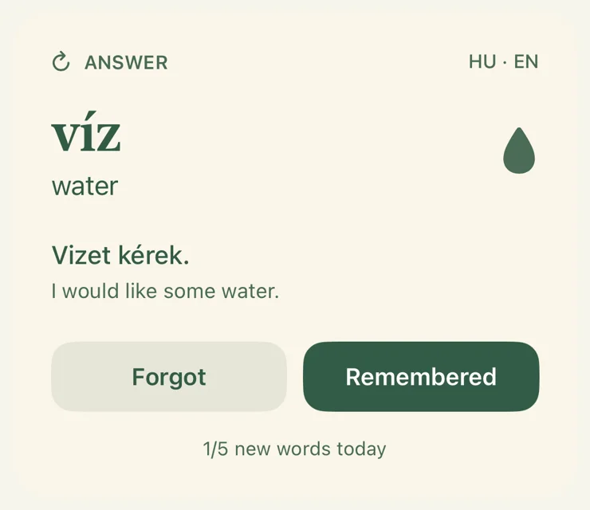

Hungarian that sticks, every time you unlock.
Magyar Widget puts a Hungarian word on your Home Screen and brings it back with spaced recall, right before you would forget it, so practice fits into moments you already spend on your phone.

Words come back right before you would forget them.
A word seen once fades fast. Magyar Widget uses spaced recall, the scheduling idea behind serious flashcard study: each review pushes the next one further out, so a word moves from short-term to long-term memory with the fewest repetitions.

New words arrive at the daily pace you choose, and only count once you tap Seen.
It comes back soon, so a shaky word gets another look before it slips.
The gap grows. Days become weeks, and the word is yours.
Reviews are chosen for you. You never manage a queue or decide what to study next.
Start with the words Hungary actually uses.
Three Core decks of high-frequency everyday vocabulary for greetings, food, travel, and daily conversation. Each word has a Hungarian example sentence, an English gloss, and an icon for quick recognition.
Each deck builds on the one before it, so your progress and reviews carry over when you move up.
Private by design.
Your study progress stays on your iPhone. Read the full Privacy Policy.